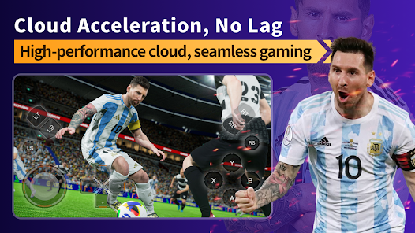

Chikii 深度盘点：把 PC 和主机游戏搬进手机的云游戏全解析
从游戏库生态、云端渲染、操作控制到排队机制，系统性盘点 Chikii 云游戏平台的能力边界与适用场景。
它是什么，为什么值得认真盘点
Chikii官网 是一款面向移动端的云游戏平台——简单说就是把原本只能在 PC、PS4、Xbox、Switch 上跑的 3A 大作，通过云端 GPU 渲染后以视频流的形式推送到手机屏幕上，用户在手机上操作，操作指令再回传到云端执行。这条链路看起来直白，但真正做起来要跨过不少坑：云端显卡调度、网络延迟压缩、移动端输入的适配、游戏版权的处理——每一环都直接影响体验。
市面上做云游戏的不止 Chikii 一家，但 Chikii 的定位比较清晰：主打"移动端轻量化"，不做硬件捆绑（不需要自有品牌手机），也不做月费订阅的强绑定。这种定位让它在价格敏感的学生群体和没有游戏 PC 的通勤族里积累了不少用户，也让它成了观察"云游戏到底能不能替代本地硬件"这个问题的一个很好的样本。想试试的话，安装包从官方下载拿。
游戏库生态：多平台聚合是它的核心竞争力
云游戏平台的第一关永远是"你有什么游戏可以玩"。Chikii 目前的游戏库规模在同类平台里算是比较大的一档：公开资料显示它提供超过 400 款 PC 游戏和 200 款以上的 3A 大作，来源覆盖 Steam、Origin、Epic Games Store、Ubisoft、PS4、Xbox One、Switch 等多个平台。每周都有新作品加入，不是静态资源库。
游戏的组织方式也比较成熟。首页默认挂几个推荐区块——热门游戏、新游上线、编辑精选、继续游戏（登录后出现的上次进度入口），对新用户来说不用逛分类就能直接开玩。分类浏览支持按平台来源、游戏类型、人气排序、发行时间四个维度交叉筛选，找特定品类游戏的效率还可以。
每款游戏的详情页信息密度不低：封面和截图、玩法简介、排队等待人数估算、支持的操作方式（触屏/手柄/键鼠）、VIP 标记和免费排队标记。尤其是"排队人数"这个细节——后面会讲到 Chikii 的排队机制——提前知道大概等多久，比进了队列才发现要等半小时体验好得多。
从热门推荐区的构成来看，Chikii 的主力流量还是集中在"长线热度不减的大作"上：GTA V、赛博朋克 2077、荒野大镖客 2、艾尔登法环这些作品常年排队，射击竞技类（PUBG、CS 2、APEX 英雄）和竞速体育类（地平线 5、FIFA 系列、NBA 2K）也都有完整覆盖。RPG 和模拟策略类相对少一些，但巫师 3、博德之门 3、城市天际线这些头部作品都在。
云端渲染与网络：延迟是绕不开的天花板
云端 GPU 渲染是 Chikii 的技术底座，但这部分对用户来说是黑盒，能感知到的主要是画质档位和延迟体验。平台提供了多个画质档位（流畅、标准、高清、超清），用户可以根据自己的网络情况手动切换，也可以让平台自动适配。
这里的关键矛盾是：画质越高，码率越大，对网络带宽的要求就越高，同时编码和解码的延迟也会略微增加。Chikii 官网上给出的最低网络要求是 4Mbps 带宽就能跑流畅档，高清档建议 10Mbps 以上，超清档需要 20Mbps 稳定带宽。但实际体验中，除了带宽，延迟和抖动的影响更大——4G 网络在信号好的地方能跑，但地铁、电梯等场景下丢包会直接导致画面卡顿或操作延迟。WiFi 下的体验明显好于移动网络，尤其是在路由器近距离连接时。
排队机制也是云端渲染层的直接体现。因为云端 GPU 资源有限，热门游戏高峰期可能出现排队现象，免费用户排队时间从几分钟到半小时不等，VIP 用户有优先通道。排队人数的估算会实时刷新，游戏详情页提前展示，进队列后也能看到前面还有多少人。对"我想立刻开玩"这种刚性需求来说，排队确实是一个体验减分项，但考虑到云游戏平台的硬件成本结构，排队几乎是所有同类产品都无法完全避免的。
操作控制体系：触屏、键鼠、手柄三条腿走路
云游戏的另一个核心挑战是：PC 游戏原生是给键鼠设计的，主机游戏是给手柄设计的，怎么把这些输入方式平移到手机上？Chikii 在这方面做了三层覆盖。
第一层是触屏虚拟按键——默认方案，也是最能体现平台体验差距的环节。Chikii 的做法是在游戏画面上叠加一层虚拟按键界面，把触屏坐标换算成键鼠输入传回云端。默认布局是左半屏虚拟摇杆（WASD 移动）、右半屏攻击交互按钮、屏幕边缘视角滑动区域、右上角功能按钮集合（ESC、Tab、Shift 等）。大部分游戏有预配置的映射方案，进入就能用，不需要用户从零配置。

自定义调整的空间也比较大：按钮可以拖动改位置、长按修改按键对应关系、调整尺寸和透明度。几个实践建议是：新手先用默认布局熟悉，射击类把视角区域拉大，动作格斗类增大按钮尺寸避免误触，不同游戏可以保存多套布局方案随时切换。
第二层是键鼠直连——蓝牙配对或 OTG 有线连接都支持。这里有个关键区别：如果游戏本身就是 PC 原生的，云端运行的就是完整 PC 版，键鼠输入直接传回游戏进程，跟本地玩 PC 游戏一模一样，不需要任何额外配置。但主机移植游戏需要在设置里开键鼠映射，把键盘按键映射到手柄按钮上，这时候部分功能键可能需要自定义——具体的键位配置可以去Chikii文档查。鼠标灵敏度也得自己调一调——竞技射击建议调低提高精准度，开放世界探索可以调高。
第三层是手柄——支持蓝牙连接的主流手柄，部分游戏也支持 OTG 有线。手柄操作对于动作类和主机移植游戏来说比触屏舒服太多，尤其是需要精确输入的格斗游戏和竞速游戏。
短板也要说
盘点不能只看优点。Chikii 的几个短板比较明确：
排队机制是最大的体验瓶颈。免费用户高峰期等半小时起步是常态，VIP 虽然有优先通道但也不保证零等待。如果你的使用场景是碎片化时间想玩一把，排队带来的"预期被打破"感很强烈。
网络门槛比宣传的要高。官网上说 4Mbps 就能跑流畅档，但实际上除了带宽，延迟和抖动的影响更大。4G 网络在信号好的地方能跑，但地铁、电梯里的丢包会直接导致画面卡顿或操作延迟。超清档对 20Mbps 的要求也意味着很多家庭宽带跑不满。
画质天花板受限于云端硬件。即使开了超清档，渲染分辨率和帧率也取决于云端分配的 GPU 资源，不是用户本地能控制的。而且云端渲染的色彩、对比度经过编码压缩后会有一定损失，跟本地显卡直驱 PC 游戏的画面质感还是有差距。
版权的灰色地带需要留意。Chikii 上的游戏来源覆盖了多个商业平台，其中部分游戏并没有获得厂商的官方云游戏授权。平台靠用户贡献的镜像和云端虚拟运行来规避这个问题，但理论上存在被厂商投诉下架的风险，之前已经有过个别游戏因为版权问题被撤架的案例。
什么样的人该用它
综合上面的盘点，Chikii 适合的人群画像大致可以分成三类：
第一类是没有游戏 PC 的通勤族和学生。如果你只有一台中低端笔记本甚至只有手机，但又想玩 GTA V、赛博朋克这种 PC 大作，Chikii 是成本最低的解决方案——不需要买显卡、不需要攒机器，一台手机加稳定的网络就能开玩。价格上免费排队也能用，VIP 会员费相比一台游戏 PC 可以忽略不计。
第二类是云游戏尝鲜者和技术爱好者。如果你对"云端 GPU 能不能替代本地硬件"这个问题感兴趣，或者想体验一下"手机跑 PC 大作"到底是种什么感觉，Chikii 是一个门槛很低的试验场。排队、延迟、画质 trade-off 这些问题在它身上都能直接摸到，比看评测文章来得真实。
第三类是需要"随时随地"补完长线游戏的玩家。如果你有一台主机但工作忙没多少时间坐下来，想在通勤或午休时继续推进 GTA V 的主线剧情，Chikii 提供了一个"游戏进度云端同步"的可能性——前提是这款游戏支持存档云同步，而且你不介意在手机上用触屏或键鼠操作。
以上就是对 Chikii 的完整盘点。总的来说，它在游戏库覆盖、移动端适配和操作控制这几个核心维度上已经做得比较成熟，短板集中在排队机制、网络门槛和版权合规这几个结构性问题上——这些问题不是 Chikii 一家能单独解决的，而是整个云游戏赛道共同面对的天花板。
这套资料在三个仓库都能拿到——主仓库在 GitHub 方便海外用户访问，国内走 Gitee 速度更稳，GitCode 作为额外备份。